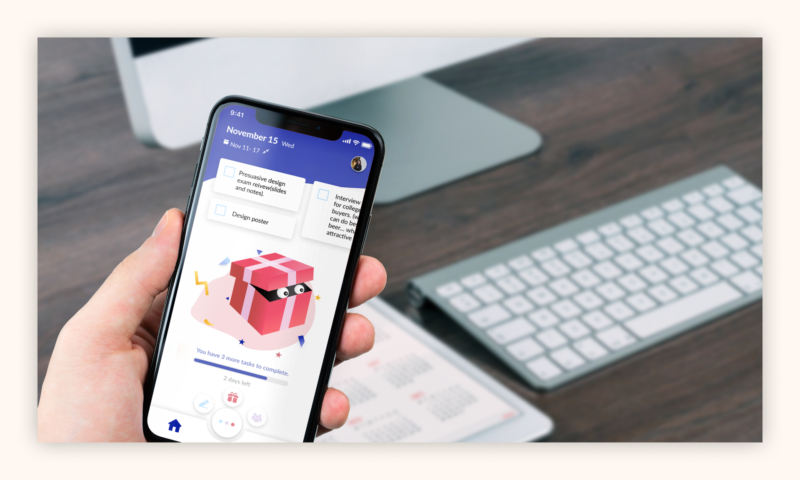
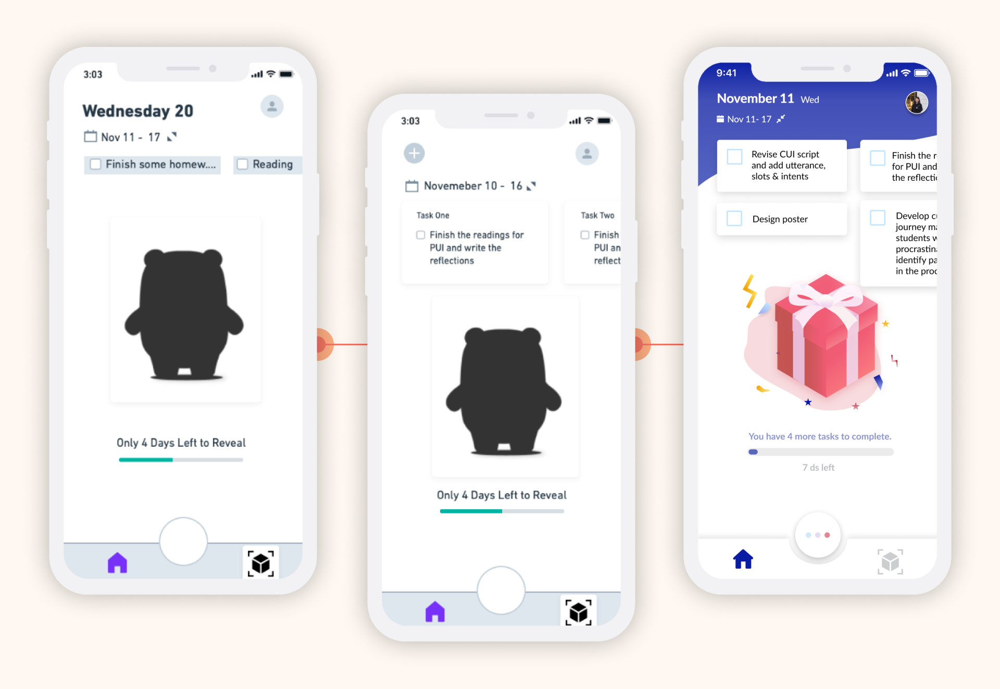
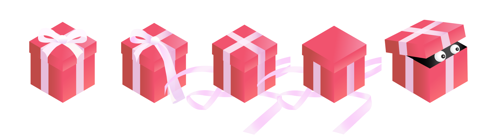
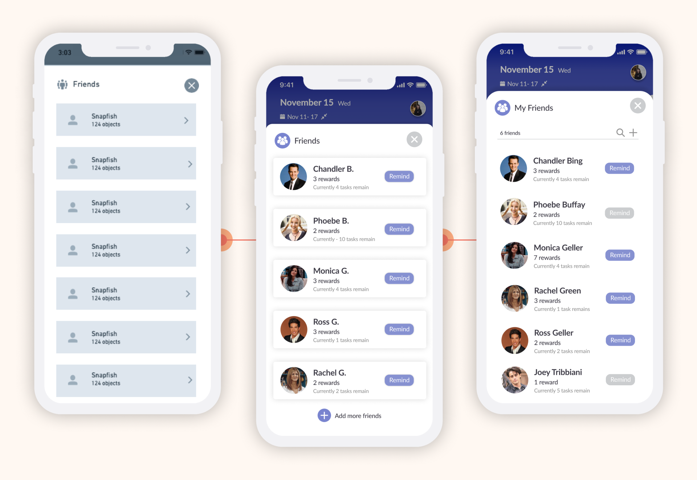

Problem
Along with the rise of technology, people are faced with an increasing amount of distractions as they try to do their work productively. Existing apps fail to incentivize users to stop procrastinating.
Insight
Undergraduate students procrastinate for many reasons, but one prevailing reason we found was that students seek pleasure and begin procrastinating to release academic stress.
Outcome
A gamified task completion experience to combat procrastination disguised as a productivity app. Leverages theories on psychology and design to increase a user’s pleasure surrounding their work.
How might we make the environment surrounding a task more enjoyable for undergraduate students?
An academic task usually does not provide undergraduate students sufficient intrinsic motivation for completing the task. Because of this, the environment surrounding the task needs to provide the intrinsic motivation necessary to complete the task without deterring students through procrastination.
Interviews
We interviewed 15 undergraduate students to determine the causes and pain points within the academic procrastination process. We found that:
- Smartphone usage distracts people
- Anxiety towards a task causes people to delay it
- Peer influence can deter and mitigate procrastination
- Intrinsic motivation is necessary for people not to procrastinate
Customer Journey Map
We then synthesized our interviews to a consolidated journey map. This revealed areas for opportunity that we looked into addressing:
- How might we decrease anxiety towards a task?
- How might we improve the environment surrounding the task?
- How might we provide intrinsic motivation for task completion?
Affinity Diagram
We compiled our findings though affinity diagramming and grouped them together. We found that emotional and external factors significantly affected academic procrastination.
A Different Approach
After examining existing solutions, we found that these platforms
failed to encourage users to consistently focus on small tasks. Existing
solutions like Forest
and Tomato timers
did not combine intrinsic motivation and task specificity.
With these in mind, rather than focusing on getting tasks done, we aimed
to design a platform that
makes the environment surrounding the task more enjoyable
through internal and external rewards to motivate users to accomplish their tasks.
Junto
Junto is a productivity app that introduces rewards to users when they accomplish tasks by unlocking and revealing mystery objects, collecting these objects, and placing these in a virtual world or their rooms through augmented reality (AR). The anti-procrastination intention is disguised as productivity to diminish users' skepticism towards the intended effect of the app.
Behind the Name Junto
The Junto (from the Spanish word for assembly, junta) is a club that Benjamin Franklin formed in 1727. Franklin is well known for his wit and famous phrases, some of which have to do with combating procrastination and making the most of one’s time.
Augmented Reality (AR) can serve as an incentive to overcome procrastination - and this has yielded positive results. By using AR, a user can see and interact with their object in real life. This element makes the prize more real and furthers the enjoyment aspect of Junto.
Curiosity itself can motivate behavior. It could serve as a form of intrinsic motivation to incentivize people to complete more tasks without negatively affecting performance. Junto uses curiosity as motivation by displaying a mystery gift box unwrap in stages as users complete tasks.
Junto uses four of IBM Nudge Library's suggested design principles to achieve the desired behavior.
- Appeal to emotions: designing cute mystery objects and implementing an easy UI with light colors
- Anticipation: built through the slow reveal of the mystery object
- Progress in tasks: shown through the unwrapping of the present on the home screen
- Habit cycle: creating tasks (cue), completing tasks on time (action), and receiving a revealed mystery object (rewards).
Gamification is defined as the use of “game-based mechanics, aesthetics, and game thinking to engage people, motivate action, promote learning, and solve problems.” (Kapp, 2012). Junto transforms each task as part of a game — users complete one task to unlock part of a prize.
Procrastination often serves as a relief or reward from undesired activity. Junto provides immediate feedback upon task completion through rewards. Junto aims to shift user focus from completing arduous tasks to unlocking rewards.
Junto allows users to enter into self-awareness when they see the gift box on the home screen. The box adjusts to the progress made. Users can see their progress based on the visual status of an unwrapped present. This encourages users to match their behavior to their desired outcome (to reveal the contents of the present by accomplishing their tasks).
Junto directly addresses four problems that must be overcome for successful goal striving.
- Overcome the initiation of action on a goal.
- Overcome distractions and stay on track with the goal.
- Overcome failure and continue progress.
- Overcome the avoidance of overextension and ego depletion.
- Users can easily add tasks with Canvas or a calendar app.
- Junto increases pleasure surrounding work through collecting motivating mystery objects.
- Junto provides sufficient motivation and pleasure to avoid counter-productive tasks.
- Junto allows users to review the amount of progress made through the collection page.
Social comparisons can change people’s goals and actions. The continued presence of positive role models can continually motivate someone to achieve a difficult goal. Junto allows users to view objects that others in their social group have achieved to motivate themselves through others’ progress. Additionally, the remind feature helps friends keep each other accountable.
Mid-Fidelity Prototype
These are four screens from our mid-fidelity prototypes.
In these prototypes, our main considerations were:
- Making a clean, easy user interface
- Disguising the intended anti-procrastination effect with a productivity checklist
- Creating cute displays to encourage the use of the app
User Testing
User testing revealed key insights that we used in iterating on our prototypes:
- Mystery pets were not surprising enough (too much info was revealed early on)
- Long term and short term scheduling is needed for motivation
- Icons used did not convey meaning clearly
Iterating: Navigation bar
We iterated on the organization and clarity of icons on the navigation bar. During user testing, we found that the AR page is frequently visited and a defining feature of the app, warranting it the second spot on the nav bar.

Iterating: Home page
We constantly iterated on the home page, both with the display of tasks and the mystery pet. User testing revealed that users wanted to see the full description of the task they need to complete rather than just one line of it.
User testing also revealed that the pets were initially not mysterious enough. To address this, we created a graphic of an unwrapping gift box. As a user completes more tasks, the gift box will slowly unwrap and unveil the mystery pet.
Iterating: Social page
We iterated on our first design by adding the "remind" feature and immediately providing friends' current progress. With more user testing, we also found the need to decrease visual detail for each friend box to make it easier for a user to scroll through their friends list.
Onboarding
Social Features
Task Completion
AR and Virtual World
Interactive Prototype - Try it for yourself!
Lessons Learned
By working on Junto, I learned several lessons. I learned to take
constructive criticism and be quick to iterate on designs.
I saw how iterating based on user feedback significantly improved Junto.
I also learned how to apply design and psychology theories through games.
This project enabled me to gain research skills and successfully apply
theories to user-centered design.
Overall, this project was difficult due to the quick timeline.
Nevertheless I thoroughly enjoyed it, and I hope to continue building
on this project in the future.
Demo Day